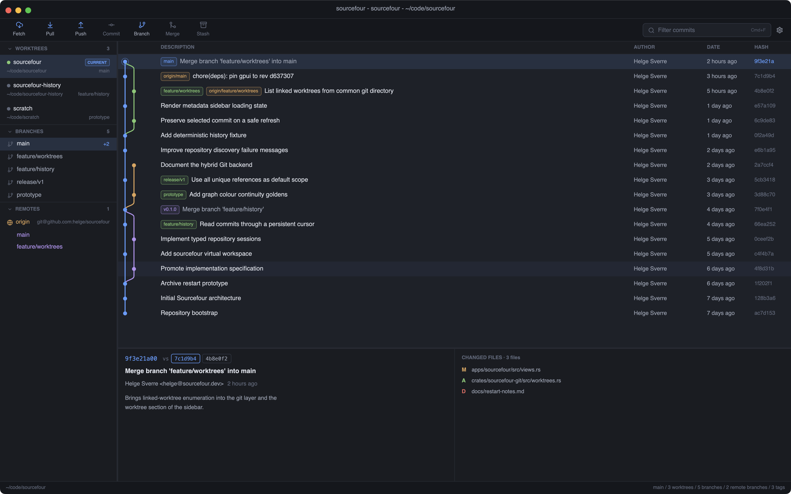
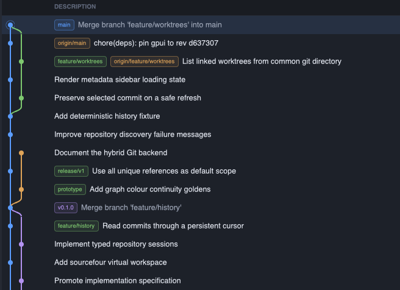
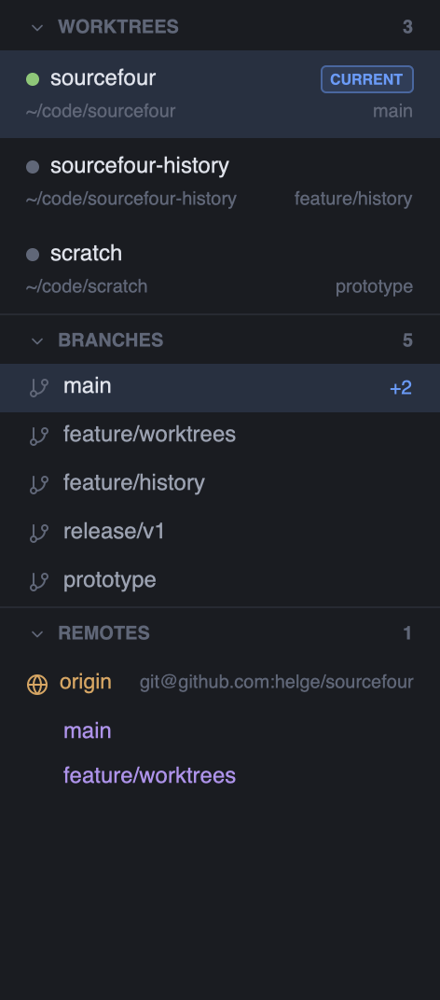
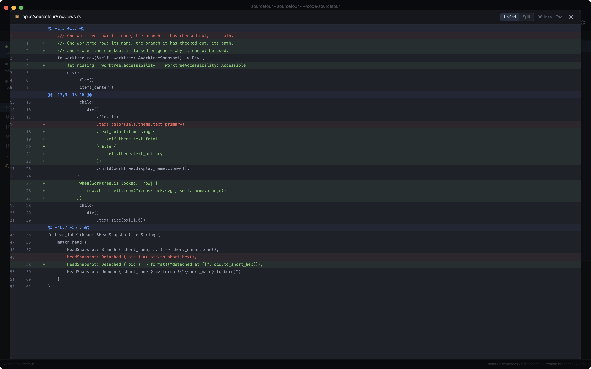
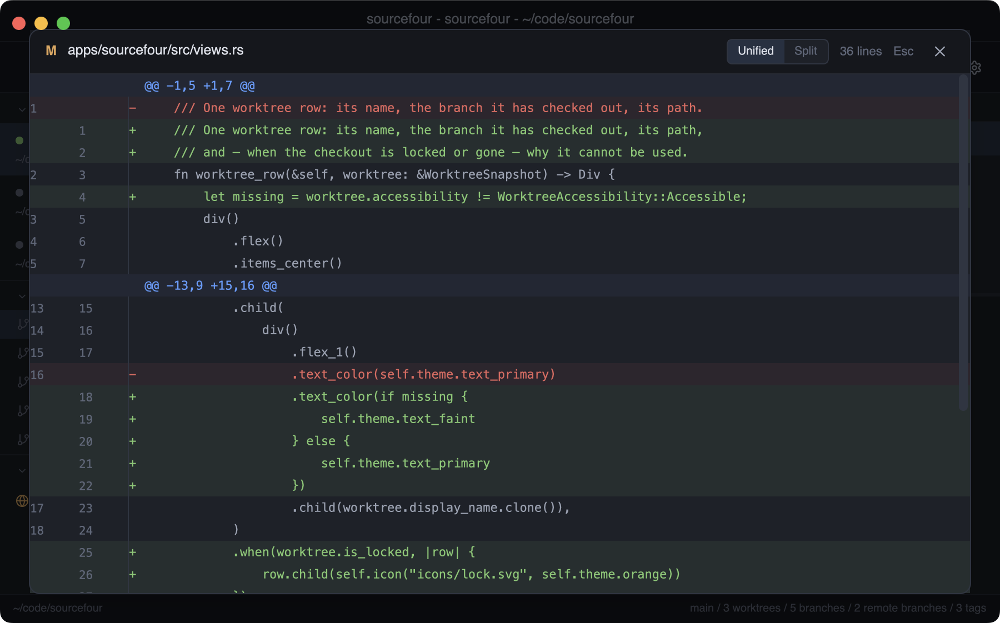
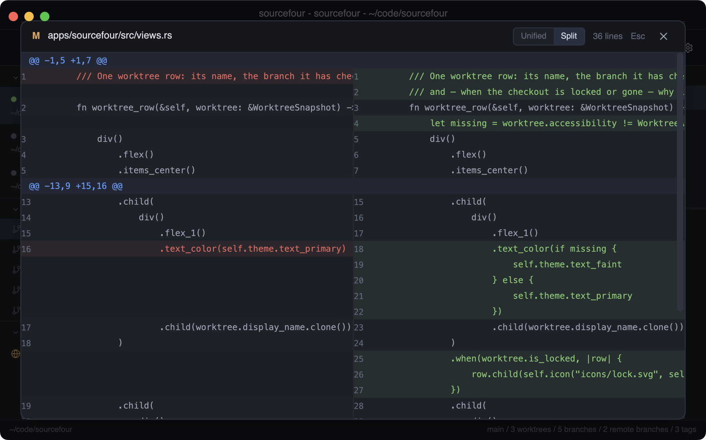
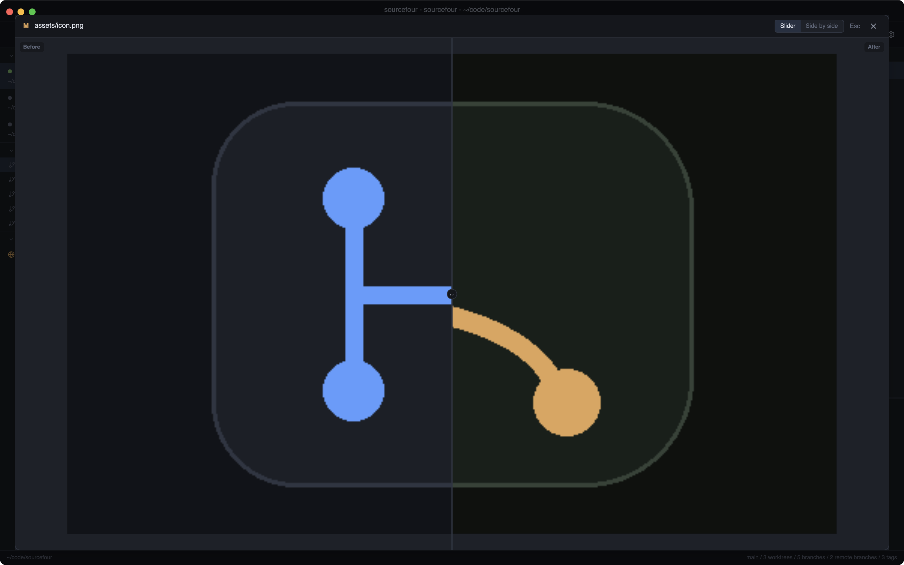
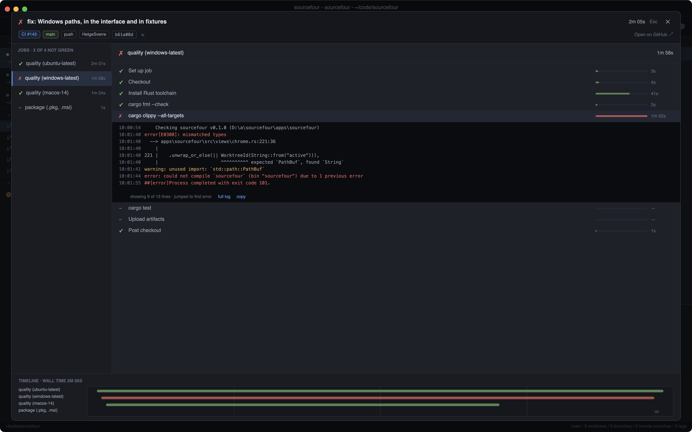

One command in any repository: the graph, the worktrees, the diffs — live, native, and asking for nothing. No account, no daemon, no configuration.
brew install helgesverre/tap/sourcefour
macOS · Windows · Linux · MIT

The graph
Merges show both parents. Octopus merges show all of them. Each line of development keeps its own colour from tip to root, and the commit you have checked out wears a halo.
Lanes are assigned by an incremental algorithm as commits stream in, so the drawing stays correct while history is still loading.


The sidebar
Linked worktrees sit at the top of the sidebar with the branch each one has checked out — locked, detached, or sitting on a drive you unplugged. Branches carry their ahead/behind counts; remotes carry their tracking branches.
Click a branch to scope history to it. Click again to widen back out.
The odd states too — a lock, a detached HEAD, a checkout on a drive that left. Straight from the plumbing, never a guess.
Diffs
Click any changed file and its diff fills the window, syntax-neutral and monospaced, with old and new line numbers where Git puts them. Escape closes it.
The scrollbar is a scrubber: grab it and fly through a ten-thousand-line diff without lifting your hand.

Side by side
One click swaps the layout, and the choice is remembered the next time you open a diff. Additions and deletions are paired line for line, so a rewritten block reads as a rewrite instead of a wall of red followed by a wall of green.

Unified
SplitImages
PNG, JPEG, GIF, WebP and friends open as pictures, not as a note saying the file is binary. Drag the divider to wipe between before and after, or switch to side by side when you want both at once.
An added or deleted image says so on the missing half rather than showing you an empty box.

GitHub Actions
Click a run and the failing job is already selected, the failing step already open, the log already scrolled to the first error. No tabs, no spinners, no digging.
Duration bars show where the minutes went, a timeline shows what ran in parallel, and a run that is still going updates itself every few seconds. Pull requests get chips on their branches; commits get CI dots in the history.

Sourcefour watches the repository itself. Commit, rebase, branch and tag from your terminal — the window follows along, without losing your selection or your scroll. There is no refresh button, because there is nothing to refresh.
What you get
Every linked worktree appears with its branch, its path and its state — locked, detached, or missing its checkout entirely.
Branches created, tags pushed and commits made outside the app show up on their own, without a poll you can feel.
Commits load progressively on a worker thread, so a million-commit repository opens as fast as a ten-commit one.
Fetch, pull and push run your own git, so SSH keys, credential
helpers and hooks behave exactly as they do in the terminal.
Arrows, Page Up/Down, Home and End drive the list. Cmd+F filters it. Selection follows the commit, not the row number.
Drag the panel dividers, reorder the sidebar sections, collapse the details pane. It all comes back the way you left it.
Download
Sourcefour is open source under MIT. Every tagged release is built by CI for all three platforms, after the test suite has passed on each of them. The macOS installer is signed and notarized by Apple.
Every button downloads the newest tagged release. Prefer a package manager?
brew install helgesverre/tap/sourcefour. Prefer to read it first?
See what is on main.